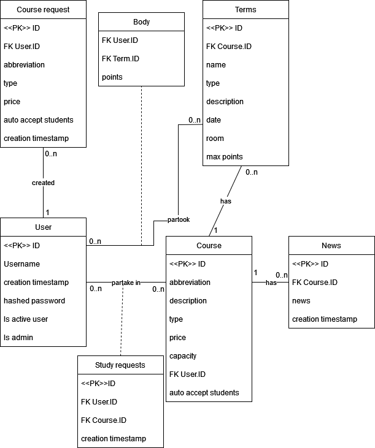

WIS 2
- Autoøi
- Petr Salaba
xsalab00@stud.fit.vutbr.cz -
správa u¾ivatelù, pøihla¹ování/registrace, tvorba databáze, statistika rychlosti naèítání stránky, zobrazení aktualit, správa produkèního serveru,
- Adam Kulla
xkulla04@stud.fit.vutbr.cz -
tvorba GUI, úvodní strana, zobrazení pøedmìtù, registrace termínù, detaily pøedmìtù, zadávání bodù, testování, zpetna editace formularu
- Jáchym Postolka
xposto03@stud.fit.vutbr.cz -
tvorba GUI, správa pøedmìtù, testování, dokumentace, plnìní databáze, tvorba modelù, mazani dat
- URL aplikace
- iis.urumasi.xyz
U¾ivatelé systému pro testování
Uveïte prosím existující zástupce v¹ech rolí u¾ivatelù.
| Login | Heslo | Role |
|---|
| xlogin00 | 123 | Administrátor |
| xlogin01 | 123 | U¾ivatel |
| xlogin02 | 123 | U¾ivatel |
| xlogin03 | 123 | U¾ivatel |
| xlogin04 | 123 | U¾ivatel |
| xlogin05 | 123 | U¾ivatel |
| xlogin06 | 123 | U¾ivatel |
| xlogin07 | 123 | U¾ivatel |
| xlogin08 | 123 | U¾ivatel |
| xlogin09 | 123 | U¾ivatel |
| xlogin10 | 123 | U¾ivatel |
| xlogin11 | 123 | Deaktivovaný u¾ivatel |
Video
Video dokumentace
Implementace
Pro implementaci jsme se rozhodli vyu¾ít framework Flask.
Backend na¹eho informaèního systému tvoøí Python a frontend se skládá z kombinace HTML a JavaScript.
Pro databázi jsme zvolili Postgres.
Popis jednotlivých èástí projektu
- /app/admin: Pøidávání nových u¾ivatelù a schvalování navrhnutých pøedmìtù - pouze pro u¾ivatele s administrátorským oprávnìním
- /app/auth: Vytváøení nových pøedmìtù, aktualit a termínù, zmìna hesla - pro v¹echny pøihlá¹ené u¾ivatele
- /app/public: Pøihlá¹ení se a zobrazení v¹ech kurzù - obecnì pøístupné
- /app/data: Modely jednotlivýh prvkù databáze
- /app/static: CSS a JS soubory
Databáze

Instalace
Rozbalte v¹echny soubory. V root adresáøi zadejte následující sekvenci pøíkazù:
- sudo -iu postgres psql
- CREATE DATABASE iis;
- CREATE USER iis WITH PASSWORD 'password';
- GRANT ALL PRIVILEGES ON DATABASE iis TO iis;
- exit
- flask db init
- flask db migrate
- flask db upgrade
- python3 init_db.py
Poté spustítì informaèní systém pøikazem:
Systém bude spu¹tìn na localhost:5000. Je mo¾né tuto konfiguraci zmìnit upravením souboru config.py v adresáøi app.
Softwarové po¾adavky
- python3.8.10
- pip 22.3.1
- postgresql
- postgresql-contrib
- pip install -r requirements.txt
Známé problémy
.